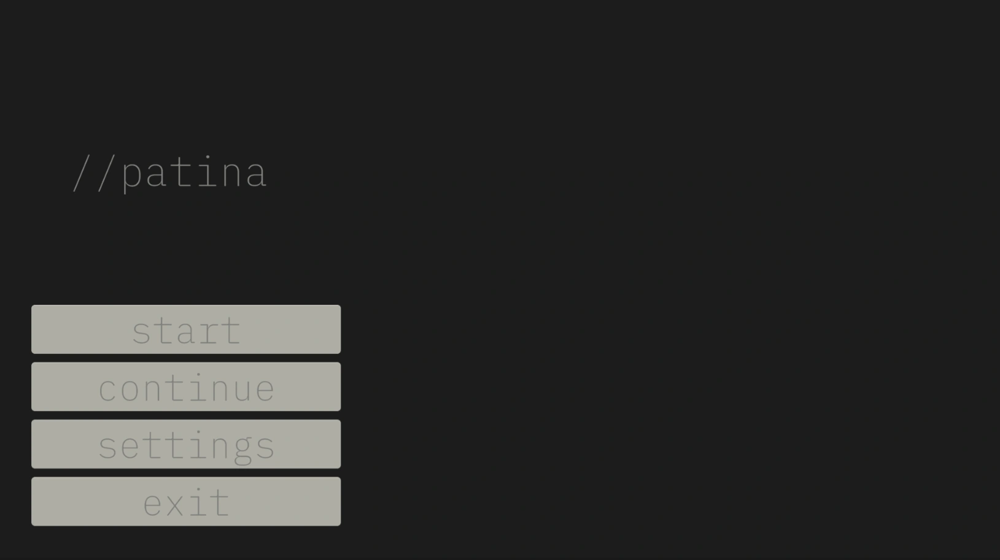
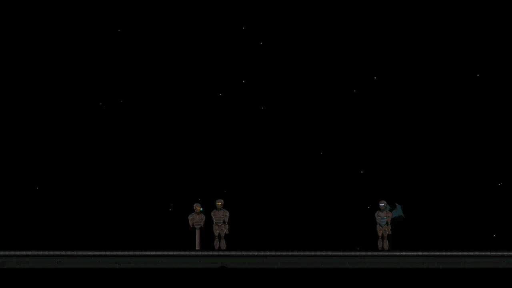
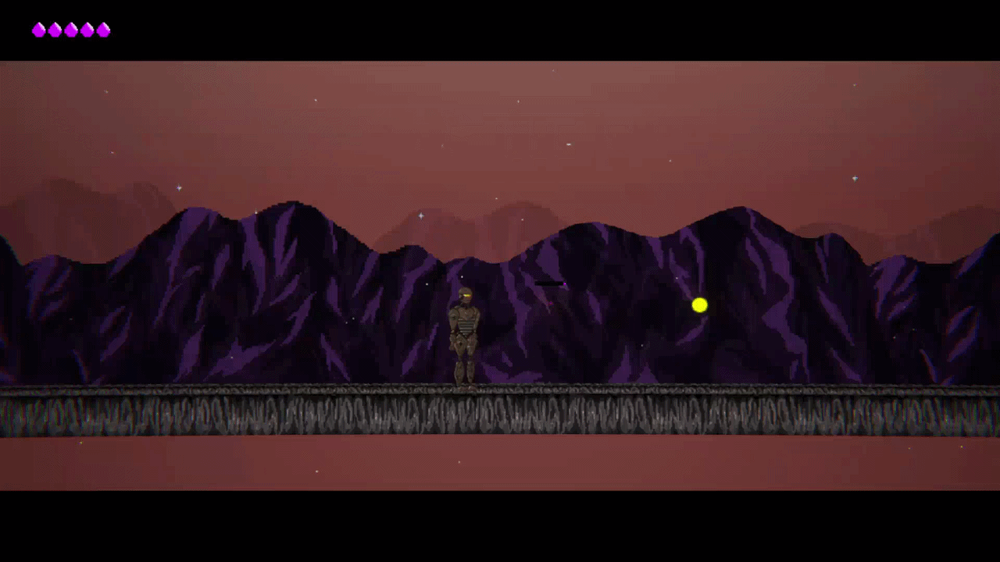
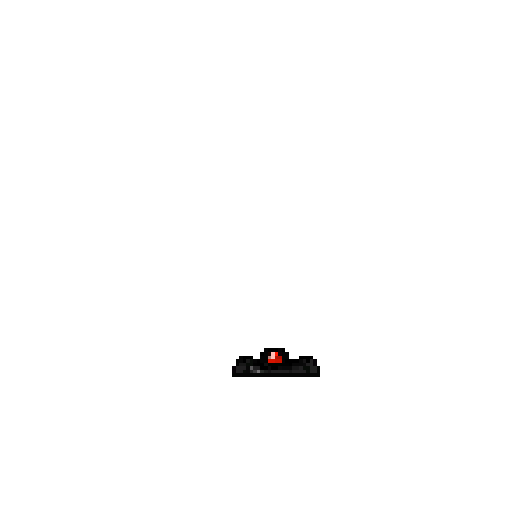
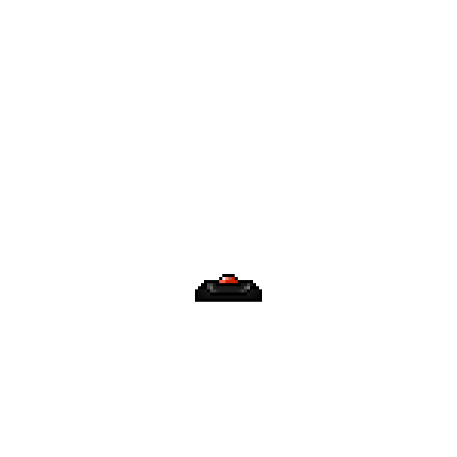
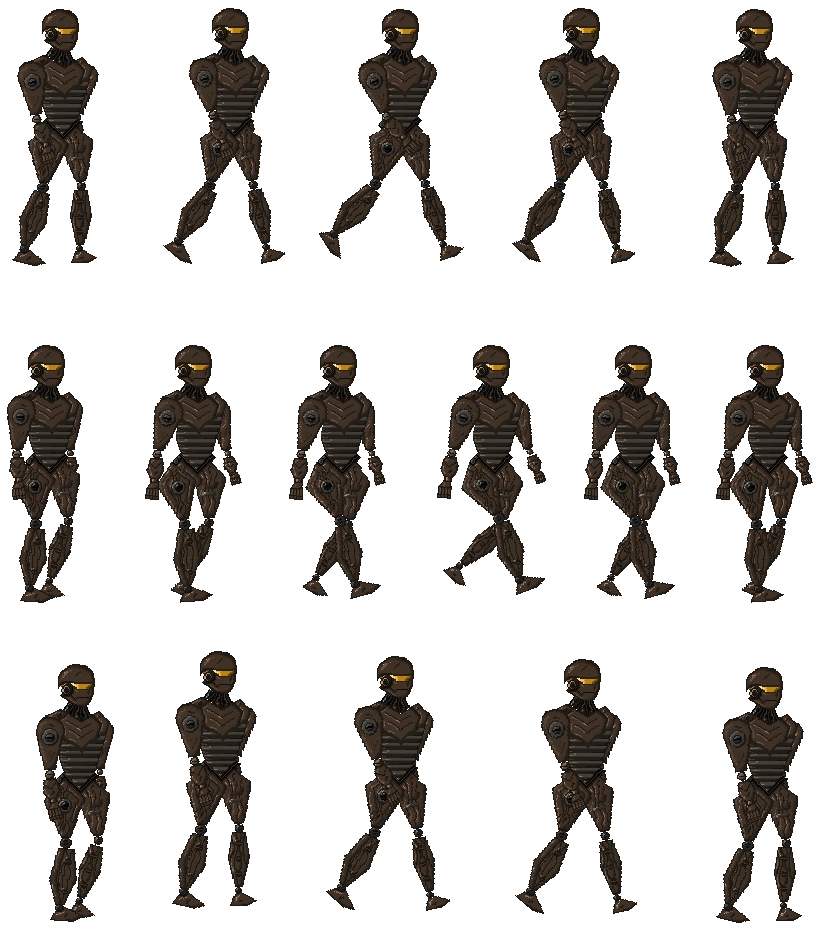

I co-developed the original version of this game in 2020 under the studio name '3bits' with two colleagues for the 'Next Game Startup (2020)' competition. While I was responsible for the entire software architecture, we shared the development of all other content. In 2025, I undertook a personal, non-commercial project to rewrite the game from scratch, adding many features that were absent in the initial version. This involved migrating to the latest Unity LTS and completely rebuilding the scenes.

Modernized UI infrastructure and a custom loading screen.
I modernized the UI/UX infrastructure, enhancing my skills with Unity tools like TextMeshPro. This phase involved deep-diving into prototyping concepts such as main menu construction, effective Canvas utilization, and scene hierarchy management.
A custom intro sequence created for the game.
Leveraging the same toolset, I began producing custom UI elements, including bespoke loading screens and introductory sequences. This hands-on practice strengthened my relationship with UI development, expanding my creative playground within Unity and enabling more innovative solutions.

A simple dialogue tree and tutorial scene.
This expanded 'playground' evolved from simple dialogue trees into complex, branching narrative paths. I even had the opportunity to implement a tutorial level featuring a mini-dialogue tree with multiple conversational routes.

A short gameplay scene showcasing dash and combat mechanics.
While this entire experience was a significant learning opportunity, it couldn't rectify some of the irreversible design flaws from the 2020 version. The character's large size and clunky movement, combined with assets and scenes that were not pixel-perfect, remained our biggest disadvantages.
Final Verdict
Revisiting an old project—the very one that ignited my passion for game development—was an enjoyable and reflective process. It sharpened my skills in problem-solving and devising alternative solutions. More importantly, it served as a crucial lesson in the importance of meticulous pre-production planning and scope management.
Various Assets



